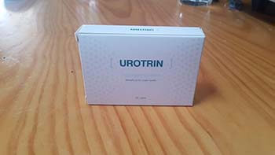

Urológus és andrológus szakemberek világszerte riadót fújnak. Adataik szerint, a prosztatagyulladás az egyik kulcsfontosságú veszély a férfiak élete számára vilgászerte, amelynek a szövődményei végül akár végzetesek is lehetnek. Arról, hogy valóban ennyire veszélyes a prosztatgyulladás és milyen módszerek léteznek a leküzdésére, Lucas Pinterrel, Ausztria Urológiai Intézményének vezető tudosával, urológus és andrológus szakemberrel beszélgettünk.
- Jó napot kívánok, Lucas. Hozzászólna a nemzetközi adatokhoz a prosztatagyulladás terén?
- Sajnos, azt lehet mondani, hogy az adatok ijesztők. Sok prosztatgyulladásban szenvedő férfi meghal a ráktól. A prosztatarák a férfiak egyik leggyakoribb rosszindulatú daganata. Évente több mint 400 000 rákos megbetegedést diagnosztizálnak világszerte; számos országban az onkológiai statisztikában a 2. vagy a 3. helyet foglalja el a tüdőrák és a gyomorrák után. A prosztatarák a rák miatti halálozás harmadik leggyakoribb oka az Egyesült Államokban. A prosztatarák a férfiak rák miatti halálozásának közel 10%-áért felelős, és az idősebb férfiak halálozásának egyik vezető oka.
Eközben azt is érdemes megjegyezni, hogy az utóbbi években csökken az ebben a betegségben szenvedők élettartama. Míg korábban az a férfi, akinél prosztatagyulladást diagnosztizáltak, számíthatott arra, hogy minimum 10-20 éve van még az életéből, akkor napjainkban ez az időszak 3-12 évet tesz ki.
- Mi a probléma a prosztatagyulladás terápiájával? Hiszen, mint tudjuk, napjainkban a betegségtől meg lehet szabadulni, vagy legalábbis kontrollálni azt.
- Igen, manapság létezik terápia a prosztatagyulladás leküzdésére. De az a probléma, hogy a férfiak többsége egyszerűen nem fordul szakemberhez segítségért. Egy részük nem tartja veszélyesnek a betegséget, a másik részük szégyelli. Ennek eredményeként az a helyzet alakult ki, hogy az emberek egyszerűen figyelmen kívül hagyják a betegséget. És amikor mégis csak fordulnak szakemberhez, akkor ez esetek többségében már késő.
Ne feledjék, hogy a prosztatagyulladás egy veszélyes betegség, amelynek egyik fő veszélye a prosztata rákos daganattá való átalakulása. Ami viszont az esetek többségében halálos kimenetelhez vezethez. Mostanában a prosztatagyulladás szövődményei miatt bekövetkezett esetek többsége a rákos daganatok miatt történik. Minél rosszabb a környezet és minél nagyobb a szervezetre gyakorolt terhelés, annál gyorsabban változik át a prosztatagyulladás daganattá. A tétlenség ahhoz vezethet, hogy a betegség gyorsan fejlődik és már 1-2 éve alatt a rák kialakulásához vezethez.
Íme néhány borzalmas példa, amelyek gyakran előfordulnak a mindennapi gyakorlatban.
1. Egy 47 éves férfi, a prosztata rosszindulatú daganatának műtéti eltávolítása közben. Sajnos, az embert nem sikerült megmenteni.
Érzékeny tartalom. Kizárólag 18 éven felüli nézők számára elérhető.
2. Ez egy másik férfi eltávolított daganata, aki szerencsére életben maradt. A prosztatagyulladás első jeleinek megjelenése utáni 1,5 év alatt fejlődött ki.
Érzékeny tartalom. Kizárólag 18 éven felüli nézők számára elérhető.
"A prosztatagyulladás egy veszélyes betegség, amely fő veszélyeinek egyike a prosztata rákos daganattá való átalakulása"
- Vannak-e lehetőségek a prosztatagyulladás hatékony otthoni terápiájára? Végül is ez megoldaná azt a problémát, hogy az emberek nem szívesen fordulnának szakemberekhez, mert szégyellik a problémát.
- Ha az úgynevezett népi tanácsokról beszélünk, akkor azt kell mondjam, hogy ezek teljesen hatástalanok. Sőt gyakran csak rontanak a helyzeten. Azért van egy olyan készítmény, amely otthon használható a prosztatagyulladás ellen, amely valóban jó eredményeket mutat. A neve . Ez a tudósok fejlesztése, amely valóban egyedi. És most a készítmény gyártásával kapcsolatban folyik egy igazi harc a nemzetközi magánklinikák hálózatai között. De amennyire én tudom, a tárgyalások során egy olyan feltételt szabtak, hogy először a készítmény Ausztriában kerül értékesítésre, és csak utána lehet majd külföldre exportálni.
Az több évig nagy kutatócsoport fejlesztette ki, amely vezető szakértőkből és gyakorló szakemberekből állt, akik minden nap szembesülnek a prosztatagyulladás eseteivel.
- Úgy tűnik, mintha Ön 100%-ban biztos lenne ebben a készítményben. Tesztelték már a készítményt?
- Természetesen. A minősítés előtt minden készítmény vizsgálatokon esik át. És az sem volt kivétel. A kutatások eredményei igazi meglepetést okoztak a tudosok és a szakemberek számára: az emberek 85-87%-a megszabadult a problémától, ami nem tért vissza. A többi férfinál eltűntek a betegség jelei és megszűntek a gyulladásos folyamatok a prosztatában. Azonban a betegség kiújult, de a második kúrát követően a probléma már megszűnt.
Az azért jó, mert átfogó hatással van a problémára. A jelek gyakran már az első napokban enyhűlnek. A készítmény hozzájárul a gyulladásos folyamatok megszüntetéséhez, a potencia helyreállításához. És ami a legfontosabb, segít kiküszöbölni a prosztata rákos daganattá történő átalakulásának kockázatát.
A készítmény átesett a vizsgálatokon Európában és az USA-ban, valamint a Párizsi Urológiai Egyetemen és a Michigeni prosztatagyulladást kutató központban is. Mindkét esetben a vizsgálatok teljesen alátámasztották a hatékonyságát. A francia adatok szerint náluk a legtöbb meggyógyult ember volt megfigyelhető.
- A következő kérdés az, hogy hol kapható az ?
- Ha a gyógyszertárláncokról beszélünk, akkor, sajnos, egyenlőre a terméket nem lehet megvásárolni egyikben sem. A probléma az, hogy a gyógyszeripar egy úgynevezett hatalmas korporáció, amely nagy bevételre törekszik. Az pedig egy olyan készítmény, amelyért akár magas árat is lehet kérni. A gyártó viszont az maximálisan elérhetővé szerené tenni a lakosság számára. Ez konfliktushoz vezetett, amelyet még mindig nem sikerült megoldani. De az a biztos, hogy amíg a tárgyalások és a megbeszélések még folyamatban vannak, a férfiaknek lehetőséget kell biztosítani a termék megvásárlására. Ezért egyelőre csak az Interneten keresztül értékesít, a speciális hivatalos weboldalon rendelhető meg. Én magam is ellátogattam a weboldalra, hogy leteszteljem és megnézzem, hogyan működik. Valójában minden nagyon érthető és egyszerű: először adja le rendelését online, utána várja meg, amíg az operátor felhívja, hogy pontosítsa a részleteket és a szállítási címet. Még az is fontos, hogy a kifizetés a kézhez vétel során történik. Szerintem fontos lehet azok számára, akik ritkán rendelnek valamit az interneten.
Jelenleg a készítmény csak az interneten rendelhető, de arról tárgyalnak, hogy jövőben az az ország minden gyógyszertárban legyen elérhető. Úgy gondolom, hogy ezután sikerülni fog közös nevezőre jutni a gyógyszertárláncokkal.
- Tisztelt Lucas, köszönjük az interjút. Szeretne még valamit üzenni olvasóinknak, mielőtt befejeznénk az interjút?
- Azt szeretném mondani, hogy prosztatagyulladás egy olyan betegség, amelyet nem szabad figyelmen kívül hagyni. Ez egy veszélyes betegség, amely rákhoz vezethet és amely évente több tízmillió emberrel végez. Ha nem akar urológus szakemberhez fordulni, vagy egyszerűen nem tud normális szakembert találni, használja az készítményt. Ausztriában nagyon olcsón kapható. Emellett felülmúlja más készítmények és eljárások hatását.
P.S. Megállapodtunk a gyártóval, hogy további kedvezményt biztosítunk olvasóink számára. A gyártó beleegyezett, és most bárki még kedvezőbb áron juthat hozzá az hoz. Itt van a hivatalos weboldalra mutató link.
Az interjút folytatta: Melinda Bayer
A fotók nyílt forrásokból származnak
F. Imre -
Megrendeltem ezt a terméket és a hatást már egy hét múlva tapasztaltam. Már a műtétre gondoltam, de mostmár nincs rá szükségem. Én 48 éves vagyok, és most 38-nak érzem magam, nem számítottam ilyen eredményre:)))
Péter -
Sajnálom, hogy a szakemberem korábban nem beszélt nekem a probléma komolyságáról. A prosztatagyulladás komoly betegség, amely bárkinél kialakulhat... Most az szedése után megfeledkeztem a fájdalomról, az erekcióm helyreállt, a feleségem azt mondja, hogy olyan vagyok, mint fiatal koromban. Elégedett vagyok, köszönöm, hogy felvetették ezt a témát.
Lóránt -
Úgy döntöttem, hogy komolyan foglalkozom a prosztatagyulladással, és megredneltem ezt a terméket. Pár nap múlva ki is hozták. Elkezdtem szedni, már másnap egész éjszaka tudtam aludni, nem szaladgáltam a wc-re... Most már komolyabbak a változások, gyakorlatilag egészséges vagyok (3 hete használom). El sem tudom képzelni, hogy mi történt volna, ha nem lenne az ...

Julianna -
Köszönet a cikkért! Megrendeltem a terméket a férjemnek, már használjuk.
Szabolcs75 -
Megrendeltem, várom. Az operátor azt mondta, hogy pár nap alatt kiszállítják. Várom, majd megírom az eredményeket.
Roland -
Ajánlom ezt a készítményt. Egy hónapig szedtem, minden nagyon klassz. Semmilyen mellékhatások, semmilyen allergia, az antibiotikumok többségével ellentétben. Nincs többé vér a a spermában. A fájdalmak enyhültek, többé nem szaladgálok a mosdóba, már helyreállt a szexuális életem.
Tóth Jánosné -
Láttam egy adást a tv-ben, ott is beszéltek erről a termékről. Azt mondták, hogy ez az egyik leghatásosabb szer a prosztatagyulladás ellen. Korábban műtötre volt szükség, most pedig van az .
Révész János -
A fiamnak segített (aki 24 éves), sportsérülése volt, azután átfázott (kirándulni volt). Külföldre jártunk vele 2 éven át, az pedig 3 hét alatt segített. Továbbra is használjuk.

Tihamér99 -
Egyszerűen fáj a hátam, legalul. Sokat vezetek, még szakemberhez sincs időm elmenni. Mégis elmentem egy konzultációra. Végül az írták fel. Most már minden rendben, már visszatértem a munkámba.
István -
Ez az interjú felnyitotta a szemem. Holnap elmegyek egy urológus szakemberhez. Köszönöm!
Tamás -
Egyetértek a fenti hozzászólóval: kiváló a készítmény. Segít a prosztatagyulladás esetén, nagyon jó eredményt biztosít, szerintem mások is nagyra fogják értékelni.
Emese -
Én is szeretném megvenni, de.... Miért csak az interneten kapható, miért nincs a gyógyszertárakban? Ez nem átverés?
Sándor -
Emese, miből gondolja, hogy átverés? A cikk szerint a patikák magas felárral szeretnék eladni, náluk tízszer többe kerülne! Milyen csalásról lehet szó, ha a fizetés utánvéttel történik? Ha nem akarja, nem múszáj vásárolni. Ha megveszi, akkor ellenőrizze le a csomagot. Én májusban rendeltem meg, a futár hozta olyan 7 nap múlva. Mindent leellenőriztem és kifizettem. Manapság már bármit meg lehet venni az interneten, beleértve ezt a terméket is. Így sokkal olcsóbb.
Emese -
Elnézést kérek, nem olvastam el figyelmesen a cikket. Megrendelem az édesapámnak, nagyon szenved...:((( Ha csak az átvételkor kell fizetni, akkor a csalás ki van zárva.
Ferenc -
Kiváló szer ez az . A feleségem rendelte meg, először dühös lettem, hogy nem beszélte meg velem. Eleve nehéz volt a férfi problémáimról beszélni. Most boldog vagyok, a feleségem is boldog, gyermeket várunk.
Németh László -
Köszönet a tanácsért. Nem akartam elkezdeni a kúrát, azt hittem, hogy magától el fog múlni. Most el akarom felejteni ezt a problémát, amely tíz éven át kínzott. A szakemberek nem adnak semmilyen garanciát, ezért nincsenek is kifogásaim velük szemben. Magam halogattam el a kúrát. Most az az utolsó reményem!
Elemér -
Minden érthető a hozzászólásokból, ki kell próbálni. Megrendelem magamnak, végre megtaláltam azt, amit kerestem.